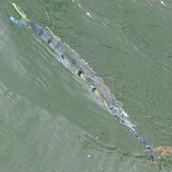
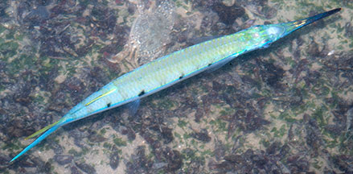
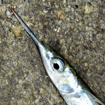
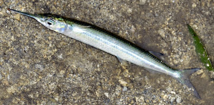

|
|
| fishes text index | photo index |
| Phylum Chordata > Subphylum Vertebrate > fishes > Family Hemiramphidae |
| Black-barred
halfbeak Hemiramphus far Family Hemiramphidae updated Sep 2020 Where seen? This rather plump halfbeak with dark bars on the sides of its body is sometimes seen near reefs. Features: Those seen about 20cm, can grow to 40cm long. Body long, cylindrical and plump. It has a forked tail, upper lobe of the tail is yellowish and shorter than the lower lobe. 3 to 9 short black bars on the side of the body. Lower jaw elongated but not very long compared to the body. The tip of the lower jaw may be reddish. It breeds in estuaries. |
 Sultan Shoal, Jan 11 |
 Tanah Merah, Dec 09 |
| What
does it eat? The adults feed on seagrasses and to a lesser
extent, green seaweeds and diatoms. Human uses: Considered tasty, it is marketed fresh and dried. |
| Black-barred halfbeaks on Singapore shores |
On wildsingapore
flickr
|
| Other sightings on Singapore shores |
 Pulau Semakau (South), Nov 24 |
 Photo shared by Loh Kok Sheng on facebook. |
|
Links
|